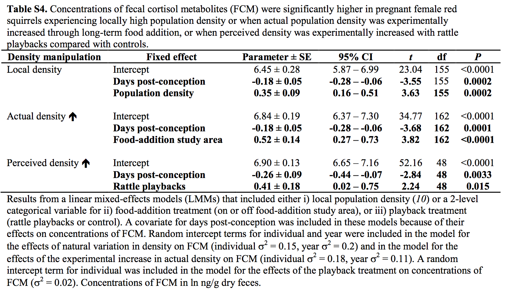
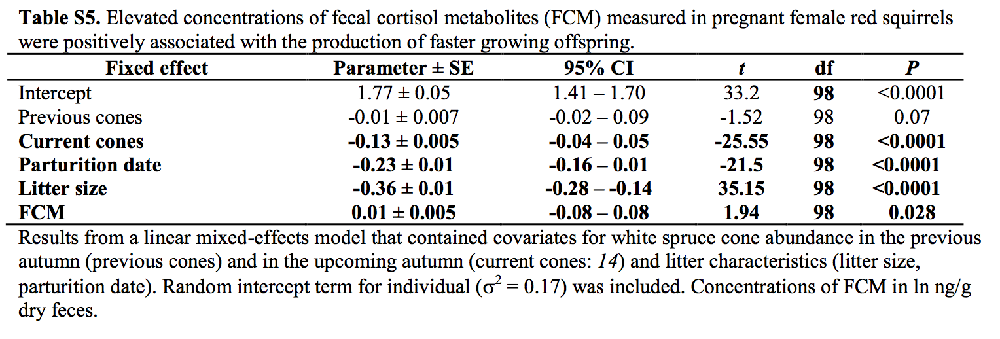

Data from: Density triggers maternal hormones that increase adaptive offspring growth in a wild mammal
Sources
Dantzer, B., Newman, A.E., Boonstra, R., Palme, R., Boutin, S., Humphries, M.M. and McAdam, A.G., 2013. Density triggers maternal hormones that increase adaptive offspring growth in a wild mammal. Science, p.1235765. Google Scholar
Dantzer B, Newman AEM, Boonstra R, Palme R, Boutin S, Humphries MM, McAdam AG (2013) Data from: Density triggers maternal hormones that increase adaptive offspring growth in a wild mammal. Dryad Digital Repository. https://doi.org/10.5061/dryad.b3h4q
Background
The study showed that North American red squirrel (Tamiasciurus hudsonicus) mothers from Yukon, Alaska produce faster growing pups in years with increased squirrel density. The researchers showed this mechanism is through increased plasma levels of the stress hormone cortisol, as measured by fecal cortisol metabolites (\(FCM\)) Remarkably, the researchers even showed that perceived (but not actual) density results in increased \(FCM\) and faster growing pups.
Reproducibility
Effect of spruce cone availability on local density (Fig. 1B)
# https://datadryad.org/resource/doi:10.5061/dryad.b3h4q
# data for Fig 1B/Table Sxxx
#
fn <- 'Spruce cone and density data.csv'
file_path <- paste(base_path, "data/", folder, "/",fn, sep="")
dt.fig_1B <- data.table(read.table(file_path, sep=',', header=TRUE))
# linear model
fit1B <- lm(Raw.Spring.Squirrel.Density ~ Previous.Year.Cones + Study.Area, data=dt.fig_1B[Treatment=='Control'])
coefficients(summary(fit1B))## Estimate Std. Error t value Pr(>|t|)
## (Intercept) 0.9374918 0.18445191 5.082581 7.720402e-06
## Previous.Year.Cones 0.2439928 0.05835227 4.181377 1.397226e-04
## Study.AreaSU 0.3960932 0.17957009 2.205786 3.279269e-02fit1B <- lmer(Raw.Spring.Squirrel.Density ~ Previous.Year.Cones + (1|Study.Area), data=dt.fig_1B[Treatment=='Control'])
coefficients(summary(fit1B))## Estimate Std. Error df t value Pr(>|t|)
## (Intercept) 1.1461764 0.2297727 1.796553 4.988306 0.0469107986
## Previous.Year.Cones 0.2387471 0.0581160 43.582879 4.108113 0.0001727167fit1B <- lmer(Raw.Spring.Squirrel.Density ~ Treatment*Previous.Year.Cones + (1|Study.Area), data=dt.fig_1B)
coefficients(summary(fit1B))## Estimate Std. Error df
## (Intercept) 1.14575993 0.22862269 1.762538
## TreatmentFood-add 0.82670186 0.45113416 2.954381
## Previous.Year.Cones 0.23895251 0.05697609 49.624755
## TreatmentFood-add:Previous.Year.Cones -0.03112299 0.19330047 49.065590
## t value Pr(>|t|)
## (Intercept) 5.0115758 0.0482942695
## TreatmentFood-add 1.8324967 0.1656791801
## Previous.Year.Cones 4.1939086 0.0001128609
## TreatmentFood-add:Previous.Year.Cones -0.1610083 0.8727479464Effect of Density on growth rate (Fig. 2/Table S2)
Estimate, t, SE, and t reproduce but reported p-values are < 1/2 reproduced p-value. Is difference due to something other than lmerTest? Or are one-tailed p-values being used?
fn <- 'Table S2 - neonate mass and growth rate.csv'
file_path <- paste(base_path, "data/", folder, "/",fn, sep="")
dt.table_S2 <- data.table(read.table(file_path, sep=',', header=TRUE))
fit <- lmer(Offspring.Growth.Rate ~ Scaled.Litter.Size*Treatment + (1|Mom.Squirrel.ID), data=dt.table_S2, na.action="na.exclude")
coefficients(summary(fit))## Estimate Std. Error df
## (Intercept) 1.51298116 0.08831902 46.52659
## Scaled.Litter.Size -0.36391553 0.07377151 48.37589
## TreatmentFood 0.20965110 0.13232061 46.35283
## TreatmentRattle -0.04179809 0.12792471 46.28036
## Scaled.Litter.Size:TreatmentFood 0.27905264 0.10977653 49.61728
## Scaled.Litter.Size:TreatmentRattle 0.23963092 0.12097980 47.62852
## t value Pr(>|t|)
## (Intercept) 17.1308649 0.000000e+00
## Scaled.Litter.Size -4.9330091 9.972829e-06
## TreatmentFood 1.5844176 1.198984e-01
## TreatmentRattle -0.3267398 7.453379e-01
## Scaled.Litter.Size:TreatmentFood 2.5420063 1.419241e-02
## Scaled.Litter.Size:TreatmentRattle 1.9807515 5.341028e-02Effect of Density on fecal cortisol metabolites (Fig. 3/Table S4)
To begin to investigate how squirrel density during pregnancy could control the future growth rate of pups, Dantzer et al measured the relationship between local squirrel density (the variable \(Density\)) and the amount of fecal cortisol metabolites from pregnant mothers (the variable \(FCM\)). Cortisol is a hormone that is secreted as part of stress response. Dantzer et al were interested in cortisol because it is known that, in mammals, blood cortisol levels in pregnant mothers have numerous effects on offspring long past birth. If increased squirrel density causes increased blood cortisol levels, then we would expect to find a positive relationship between \(Density\) and \(FCM\).
Dantzer et al analyzed effect of \(Density\) on \(FCM\) with three different analyses.
\(Density\) as continuous \(X\). Modeled with a linear mixed model. The data are from individual, tagged squirrels from different populations and different years. About 1/2 the data is from experimental populations with supplemented food (peanut butter) to increase density. The model includes days post conception as a covariate and squirrel \(ID\) and \(Year\) are modeled with random intercepts.
Density as levels of \(Treatment\). The two levels are N (control) and Y (supplemental peanut butter). The data are the same as in part 1 so this is not a replication or alternative probing.
Density as perceived density \(Treatment\) with two levels: control (including both no manipulation and chickadee call manipulation) and rattle (rattle sound mimicking neighbor squirrels)
# Dantzer, B., Newman, A.E., Boonstra, R., Palme, R., Boutin, S., Humphries, M.M. and McAdam, A.G., 2013. Density triggers maternal hormones that increase adaptive offspring growth in a wild mammal. Science, p.1235765.
# https://datadryad.org/resource/doi:10.5061/dryad.b3h4q
# data for Fig 3A/Table S4
# fn <- 'Spruce cone and density data.csv'
fn <- 'FCM data dryad.csv'
file_path <- paste(base_path, "data/", folder, "/",fn, sep="")
fcmA <- data.table(read.table(file_path, sep=',', header=TRUE))
# replace labels with more codeable names. Separate to insure match
setnames(fcmA, old=c('Squirrel.ID'), new=c('ID'))
setnames(fcmA, old=c('Year.Sample.Collected'), new=c('Year'))
setnames(fcmA, old=c('FCM.ng.g.dry'), new=c('FCM'))
setnames(fcmA, old=c('Food.Add.Grid'), new=c('Treatment'))
setnames(fcmA, old=c('Raw.Squirrel.Density'), new=c('Density'))
setnames(fcmA, old=c('scaled.days.postconception'), new=c('Days_pc'))
fcmA[,Treatment:=factor(Treatment)]
#lmm - replicates! but weird as uses experimental data in this without Treatment as a variable
fit_A <- lmer(log(FCM) ~ Days_pc + Density + (1|Year) + (1|ID), data=fcmA, na.action="na.exclude")
table_part1 <- coefficients(summary(fit_A))Part II
# categorical model as in Table S4 and Figure 3B - replicates!
# data same as in part 1 but re-analyzed as categorical
fit_B <- lmer(log(FCM) ~ Days_pc + Treatment + (1|Year) + (1|ID), data=fcmA)
table_part2 <- coefficients(summary(fit_B))Part III
#Table S4, figure 3C - replicates
fn <- 'Table S4 - playback FCM data.csv'
file_path <- paste(base_path, "data/", folder, "/",fn, sep="")
fcmC <- data.table(read.table(file_path, sep=',', header=TRUE))
fcmC[,Treatment:=factor(Treatment)]
setnames(fcmC, old=c('Squirrel.Taglft'), new=c('ID'))
setnames(fcmC, old=c('FCM.ng.g.dry'), new=c('FCM'))
setnames(fcmC, old=c('scaled.days.postconception'), new=c('Days_pc'))
fit_C <- lmer(log(FCM) ~ Days_pc + Treatment + (1|ID), data=fcmC)
table_part3 <- coefficients(summary(fit_C))Figure S3, which is the FCM as a function of treatment level (chickadee vs. rattle) prior to playback
#Supplement page 7 - methods in text, page 11 - Figure S3
fn <- 'before.playback.fcm.data.csv'
file_path <- paste(base_path, "data/", folder, "/",fn, sep="")
fcmC_pre <- data.table(read.table(file_path, sep=',', header=TRUE))
setnames(fcmC_pre, old=c('Raw.FCM.ng.g.dry'), new=c('FCM'))
setnames(fcmC_pre, old=c('Squirrel.Taglft'), new=c('ID'))
setnames(fcmC_pre, old=c('Days.Post.Conception'), new=c('Days_pc'))
fcmC_pre[,Treatment:=factor(Treatment)]
# model - why interaction here but not elsewhere? Note treatment effect bigger in additive model
fit3 <- lmer(log(FCM) ~ Days_pc*Treatment + (1|ID), data=fcmC_pre)
tableS3_rep <- coefficients(summary(fit3))
# compare to (t97 = -0.93, P = 0.17) from p. 11 of supplement
qplot(x=Treatment, y=log(FCM), data=fcmC_pre) + geom_boxplot() + geom_point()
Replicated results
The effects, SE, and t replicate but the my \(p\)-values are twice those of the authors, who must be reporting 1-tailed (directional) tests. I don’t see that they have reported that they are using 1-tailed tests. My opinion is that one-tail tests are p-hacking.
table_part1## Estimate Std. Error df t value Pr(>|t|)
## (Intercept) 6.4524936 0.28003048 7.541837 23.042112 2.891608e-08
## Days_pc -0.1824743 0.05137781 100.999797 -3.551618 5.834110e-04
## Density 0.3498811 0.09603582 99.282751 3.643235 4.302768e-04table_part2## Estimate Std. Error df t value Pr(>|t|)
## (Intercept) 6.8382198 0.19668961 3.99408 34.766553 4.144391e-06
## Days_pc -0.1853858 0.05039281 109.58188 -3.678814 3.649856e-04
## TreatmentY 0.5245187 0.13719083 88.31807 3.823278 2.448438e-04table_part3## Estimate Std. Error df t value Pr(>|t|)
## (Intercept) 6.9032211 0.13132470 25.83826 52.566054 0.000000000
## Days_pc -0.2569544 0.09055173 42.04317 -2.837653 0.006966651
## TreatmentRattle 0.4148583 0.18485323 28.14263 2.244258 0.032861251
Effect of FCM on offspring growth rate (Table S5)
Estimate, SE, and t reproduce but p-values are 1/2 the published p-values or slightly smaller for FCM. The exception for reproducing is the SE for FCM, the published is 0.005, here is 0.006
fn <- 'Table S5 Results.csv'
file_path <- paste(base_path, "data/", folder, "/",fn, sep="")
dt.table_S5 <- data.table(read.table(file_path, sep=',', header=TRUE))
fit <- lmer(Offspring.Growth.Rate ~ Previous.Year.Cones + Current.Year.Cones + scaled.parturition.date + scaled.litter.size + Corrected.FCM.ng.g.dry + (1|Mom.Squirrel.ID), data=dt.table_S5, na.action="na.exclude")
coefficients(summary(fit)) # what is "corrected about FCM?"## Estimate Std. Error df t value
## (Intercept) 1.77491252 0.053608563 74.94678 33.108750
## Previous.Year.Cones -0.01054262 0.006939105 29.38092 -1.519306
## Current.Year.Cones -0.13259087 0.005189815 28.81226 -25.548283
## scaled.parturition.date -0.22654127 0.010555374 28.99473 -21.462174
## scaled.litter.size -0.35744641 0.010167806 29.28986 -35.154723
## Corrected.FCM.ng.g.dry 0.01187675 0.006134902 28.28645 1.935931
## Pr(>|t|)
## (Intercept) 0.00000000
## Previous.Year.Cones 0.13937447
## Current.Year.Cones 0.00000000
## scaled.parturition.date 0.00000000
## scaled.litter.size 0.00000000
## Corrected.FCM.ng.g.dry 0.06292754
Effect of experiment Cortisol on growth rate (Table S6)
fn <- 'Table S6 Results - neonate mass and growth rate.csv'
file_path <- paste(base_path, "data/", folder, "/",fn, sep="")
dt.table_S6 <- data.table(read.table(file_path, sep=',', header=TRUE))
# omitting rows with NA in growth rate
inc <- which(!is.na(dt.table_S6[, Offspring.Growth.Rate]))
dt.table_S6 <- dt.table_S6[inc, ]
fit <- lmer(Offspring.Growth.Rate ~ Scaled.Litter.Size + Treatment + (1|Litter.ID), data=dt.table_S6, na.action="na.exclude")
coefficients(summary(fit)) # what is "corrected about FCM?"## Estimate Std. Error df t value Pr(>|t|)
## (Intercept) 1.5268119 0.1207671 4.835748 12.642612 6.877296e-05
## Scaled.Litter.Size -0.2887911 0.1722111 5.056877 -1.676960 1.537366e-01
## TreatmentFed GCs 0.8623885 0.1730368 5.093243 4.983845 3.954676e-03Red flags
Effect of Density on growth rate (Fig. 2/Table S2)
Growth rate is a change score and is confounding by the basline
The confounding makes no difference for these data.
refit <- lmer(Offspring.Growth.Rate ~ Offspring.Weight.1 + Scaled.Litter.Size*Treatment + (1|Mom.Squirrel.ID), data=dt.table_S2, na.action="na.exclude")
coefficients(summary(refit))## Estimate Std. Error df
## (Intercept) 1.471438633 0.12787420 56.39655
## Offspring.Weight.1 0.002771434 0.00606961 71.94834
## Scaled.Litter.Size -0.358120930 0.07606083 46.60430
## TreatmentFood 0.198316040 0.13666141 44.82602
## TreatmentRattle -0.041872853 0.12996149 44.10200
## Scaled.Litter.Size:TreatmentFood 0.289923700 0.11391142 48.14319
## Scaled.Litter.Size:TreatmentRattle 0.235421757 0.12324987 45.50565
## t value Pr(>|t|)
## (Intercept) 11.5069233 2.220446e-16
## Offspring.Weight.1 0.4566082 6.493282e-01
## Scaled.Litter.Size -4.7083488 2.271085e-05
## TreatmentFood 1.4511488 1.537012e-01
## TreatmentRattle -0.3221943 7.488279e-01
## Scaled.Litter.Size:TreatmentFood 2.5451680 1.418099e-02
## Scaled.Litter.Size:TreatmentRattle 1.9101177 6.243247e-02Figure 2 doesn’t make sense
Fig. 2 doesn’t make sense. If these are residuals from the model, there should be no Litter size or treatment (or any other) effect. I have plotted the raw growth rate against Scaled.Litter. Note the regression lines will be slightly different because they do not account for random effect of squirrel ID. Regardless, the lines are extremely close to the linear mixed modeled growth rates for each treatment at small litter size (n=2) and large litter size (n=5). This picture suggests a very different story. At best, one might say that treated growth rates are depressed, relative to control, at small litter size, and a bit elevated at large litter size. But the data are noisy, as indicated by p-values and there is a potential outlier in the control data at litter size = 2 (scaled.litter.size = -2.302608)
# plot raw litter size
qplot(x=Raw.Litter.Size, y=Offspring.Growth.Rate, color=Treatment, data=dt.table_S2) + geom_point() + geom_smooth(method='lm')
# scaled litter size
qplot(x=Scaled.Litter.Size, y=Offspring.Growth.Rate, color=Treatment, data=dt.table_S2) + geom_point() + geom_smooth(method='lm')
# compare modeled values from model at small and large end of scaled.litter.size
# mapping litter size to scaled litter size
# 1 = -3.369161 (n=1)
# 2 = -2.302608
# 3 = -1.2360545
# 4 = -0.1695011
# 5 = 0.8970522
# 6 = 1.9636056
b <- coefficients(summary(fit))[,'Estimate']
# at litter size = 2
modeled_GR <- data.table(Treatment=c('Control','Food','Rattle'),
Litter.eq.2=c(
b['(Intercept)'] + b['Scaled.Litter.Size']*-2.302608,
b['(Intercept)'] + b['TreatmentFood'] +
(b['Scaled.Litter.Size']+b['Scaled.Litter.Size:TreatmentFood'])*-2.302608,
b['(Intercept)'] + b['TreatmentRattle'] +
(b['Scaled.Litter.Size']+b['Scaled.Litter.Size:TreatmentRattle'])*-2.302608
),
Litter.eq.5=c(
b['(Intercept)'] + b['Scaled.Litter.Size']*0.8970522,
b['(Intercept)'] + b['TreatmentFood'] +
(b['Scaled.Litter.Size']+b['Scaled.Litter.Size:TreatmentFood'])*0.8970522,
b['(Intercept)'] + b['TreatmentRattle'] +
(b['Scaled.Litter.Size']+b['Scaled.Litter.Size:TreatmentRattle'])*0.8970522
))
modeled_GR # compare to plot## Treatment Litter.eq.2 Litter.eq.5
## 1: Control 2.191785 1.267751
## 2: Food NA NA
## 3: Rattle NA NA# compare to linear model
# fit_lm <- lm(Offspring.Growth.Rate ~ Scaled.Litter.Size*Treatment, data=dt.table_S2, na.action="na.exclude")
# coefficients(summary(fit_lm))
# so outling point is okayEffect of Density on fecal cortisol metabolites (Fig. 3/Table S4)
one-tailed tests
The authors reported p-values from one-tailed tests, apparently without reporting that these are one-tailed tests (at least I cannot find this with a search). As stated above, I think one-tailed tests are p-hacking – Conclusions or a decision to publish a paper in Science shouldn’t rest on a p-value of 0.03 or 0.06. It also assumes that effects in the opposite direction cannot exist. If one has prior information on the direction of an effect then use this in a Bayesian model.
Forking paths
There is variation among the analyses. Sometimes \(Days_{pc}\) includes a quadratic component sometimes not. Some analysis are factorial \(Treatment \times Days_{pc}\) while others are additive. The analysis below shows no real consequences of obvious forking paths.
Effect of \(Density\) in Table S4 part 1 is robust to forking. Effect of \(Treatment\) is robust to forking.
# part 1
coefficients(summary(lmer(log(FCM) ~ Days_pc + Density + (1|Year) + (1|ID), data=fcmA)))## Estimate Std. Error df t value Pr(>|t|)
## (Intercept) 6.4524936 0.28003048 7.541837 23.042112 2.891608e-08
## Days_pc -0.1824743 0.05137781 100.999797 -3.551618 5.834110e-04
## Density 0.3498811 0.09603582 99.282751 3.643235 4.302768e-04coefficients(summary(lmer(log(FCM) ~ Days_pc*Density + (1|Year) + (1|ID), data=fcmA)))## Estimate Std. Error df t value Pr(>|t|)
## (Intercept) 6.4691926 0.28212829 7.430514 22.929968 3.623925e-08
## Days_pc -0.3660636 0.12851697 101.140322 -2.848368 5.323965e-03
## Density 0.3387496 0.09568353 99.861116 3.540312 6.087484e-04
## Days_pc:Density 0.1143800 0.07340514 106.782165 1.558201 1.221445e-01coefficients(summary(lmer(log(FCM) ~ Days_pc + I(Days_pc^2) + Density + (1|Year) + (1|ID), data=fcmA)))## Estimate Std. Error df t value Pr(>|t|)
## (Intercept) 6.5806195 0.29691546 7.622587 22.163277 3.377392e-08
## Days_pc -0.1631244 0.05182675 101.913786 -3.147494 2.159939e-03
## I(Days_pc^2) -0.1222859 0.05780903 103.176319 -2.115343 3.680824e-02
## Density 0.3410313 0.09440687 99.669743 3.612357 4.773567e-04# part 2
coefficients(summary(lmer(log(FCM) ~ Days_pc + Treatment + (1|Year) + (1|ID), data=fcmA)))## Estimate Std. Error df t value Pr(>|t|)
## (Intercept) 6.8382198 0.19668961 3.99408 34.766553 4.144391e-06
## Days_pc -0.1853858 0.05039281 109.58188 -3.678814 3.649856e-04
## TreatmentY 0.5245187 0.13719083 88.31807 3.823278 2.448438e-04coefficients(summary(lmer(log(FCM) ~ Days_pc*Treatment + (1|Year) + (1|ID), data=fcmA)))## Estimate Std. Error df t value
## (Intercept) 6.83811023 0.19863638 3.987249 34.4252662
## Days_pc -0.20062345 0.06245086 95.960287 -3.2125009
## TreatmentY 0.52242493 0.13727552 88.087439 3.8056672
## Days_pc:TreatmentY 0.04539172 0.10849683 125.410884 0.4183691
## Pr(>|t|)
## (Intercept) 4.383510e-06
## Days_pc 1.791723e-03
## TreatmentY 2.606627e-04
## Days_pc:TreatmentY 6.763928e-01coefficients(summary(lmer(log(FCM) ~ Days_pc + I(Days_pc^2) + Treatment + (1|Year) + (1|ID), data=fcmA)))## Estimate Std. Error df t value Pr(>|t|)
## (Intercept) 6.9486234 0.21740756 4.53972 31.961278 1.609836e-06
## Days_pc -0.1673698 0.05102679 110.07502 -3.280038 1.390277e-03
## I(Days_pc^2) -0.1111788 0.05669271 113.46864 -1.961078 5.232004e-02
## TreatmentY 0.5000358 0.13497025 88.12086 3.704786 3.686636e-04Confounding Density and Treatment in Fig 3A,B/Table S4
# residuals from Days_pc
fcmA[, FCM_residuals:=residuals(lm(log(FCM) ~ Days_pc, data=fcmA))]
qplot(x=Density, y=FCM_residuals, color=Treatment, data=fcmA) + geom_point() + geom_smooth(method='lm')
Figure 1: Re-plot of Figure 3A. Data color coded by Treatment level
# residuals from lmm
fcmA[, FCM_p1_residuals:=residuals(fit_A)]
# qplot(x=Density, y=FCM_p1_residuals, color=Treatment, data=fcmA) + geom_point() + geom_smooth(method='lm')Parts 1 and 2 are not independent tests of the hypothesis that density causes increased plasma cortisol, as these are the same data. Worse, \(Treatment\) confounds part 1 and \(Density\) confounds part 2. The effects of this confounding are seen with a simple scatterplot of the \(FCM\) against \(Density\) with points colored by \(Treatment\) and separate regressions fit to each level (Figure 1). If it were simply a density effect, the treated fit should not be elevated relative to the control data.
To unconfound these, instead of two models (parts 1 and 2), both \(Density\) and \(Treatment\) could be combined into the same model. (note: Does this raise colinearity issues? No the correlation is only moderate)
cor(fcmA$Density, as.integer(fcmA$Treatment), use='complete.obs')## [1] 0.5727619fit2 <- lmer(log(FCM) ~ Days_pc + Density + Treatment + (1|Year) + (1|ID), data=fcmA)
tableS4_part1 <- coefficients(summary(fit2))
tableS4_part1## Estimate Std. Error df t value Pr(>|t|)
## (Intercept) 6.5597014 0.26168375 8.800287 25.067286 1.724396e-09
## Days_pc -0.1805912 0.05107655 102.012602 -3.535697 6.132199e-04
## Density 0.2110840 0.11846785 113.302492 1.781783 7.746363e-02
## TreatmentY 0.3489617 0.17858010 96.717436 1.954091 5.357887e-02Conclusion from the red-flag analysis.
\(Density\) has effect of .21 log(fcm)/squirrel-per-ha, which is 40% smaller effect than in model confounded by Treatment. Can this effect account for growth rate variation? \(Treatment\) has a 50% bigger effect than \(Density\) but this includes aspects of \(Treatment\) that are independent of \(Density\). The p-values for both are not strong evidence against a trivially small effect. This should be rigorously probed in follow-up experiments.
What is effect of ignoring Chickadee manipulation in Fig 3C/Table S4
The data for Figure 3C/Table S4 part 3 has Treatment levels “Control” and “Rattle” but the Control level includes squirrels that were given a Chickadee playback. In fact, very little of the data is control. The coding of which were truly Control and which were Chickadee is in the File for Figure S3, which is the data for FCM for pre-playback squirrels in Chickadee and Rattle treatment levels. I used the tag data to identify the “Controls” in the Table S4 data that were actually “Chickadee”.
# combine into single file with three treatment levels (control + chickadee + rattle) and two time levels (before, after)
# note that days_pc is scaled in fcmC but raw in fcmC_pre
fcmC_post <- copy(fcmC)
fcmC_pre[, Days_pc:=scale(Days_pc)]
temp <- match(fcmC_post$ID, fcmC_pre$ID)
fcmC_post[, Treatment_chick:=fcmC_pre[temp, Treatment]]
fcmC_post[, Treatment_chick:=factor(ifelse(is.na(Treatment_chick), as.character(Treatment), as.character(Treatment_chick)), c('Control', 'Chickadee', 'Rattle'))]red flag: ID F3007/F3008 is coded as “Control” in the playback (Table S4) data but as “Rattle” in the pre-playback data (Figure S3)
I don’t know the correct code but if re-coded as in the pre-playback file, there is a 10% reduction in the estimated effect and the p-value is even less evidence against a trivially small effect.
# RED FLAG - ID F3007/F3008 is coded as "Control" in the playback data but as "Rattle" in the pre-playback data
fcmC_post[ID=='F3007']## Treatment ID Squirrel.Tagrt FCM Days_pc Treatment_chick
## 1: Control F3007 F3008 1418.4352 -0.6100946 Rattle
## 2: Control F3007 F3008 234.8218 0.7643714 RattlefcmC_pre[ID=='F3007']## Treatment Days_pc ID Squirrel.Tagrt FCM
## 1: Rattle -0.3607039 F3007 F3008 502.3092
## 2: Rattle 0.1341818 F3007 F3008 266.5438
## 3: Rattle 0.6290676 F3007 F3008 238.2549
## 4: Rattle 0.8411615 F3007 F3008 269.1402
## 5: Rattle 1.4067452 F3007 F3008 594.1501# original coefficient table that replicates
coefficients(summary(lmer(log(FCM) ~ Days_pc + Treatment + (1|ID), data=fcmC_post)))## Estimate Std. Error df t value Pr(>|t|)
## (Intercept) 6.9032211 0.13132470 25.83826 52.566054 0.000000000
## Days_pc -0.2569544 0.09055173 42.04317 -2.837653 0.006966651
## TreatmentRattle 0.4148583 0.18485323 28.14263 2.244258 0.032861251# recoded coefficient table with smaller effect
fcmC_post[, Treatment_F3007:=Treatment]
fcmC_post[ID=='F3007', Treatment_F3007:='Rattle']
coefficients(summary(lmer(log(FCM) ~ Days_pc + Treatment_F3007 + (1|ID), data=fcmC_post)))## Estimate Std. Error df t value Pr(>|t|)
## (Intercept) 6.948365 0.14200319 24.89544 48.931046 0.00000000
## Days_pc -0.248192 0.09286464 41.16291 -2.672621 0.01073778
## Treatment_F3007Rattle 0.301708 0.19236365 26.49397 1.568425 0.12864943Red Flag: The plot and table show that the effect of playback on \(FCM\) seems to be a manipulation factor that is not specific to Rattle
fcmC_post[, logFCM_residuals:=residuals(lm(log(FCM)~Days_pc, data=fcmC_post), na.action="na.exclude")]
qplot(x=Treatment_chick, y=logFCM_residuals, data=fcmC_post) + geom_point()
qplot(x=Treatment_chick, y=logFCM_residuals, data=fcmC_post) + geom_point() + geom_point(data=fcmC_post[ID=="F3007"], color='red')
fit3 <- lmer(log(FCM) ~ Days_pc + Treatment_chick + (1|ID), data=fcmC_post)
tableS4_part3_rf <- coefficients(summary(fit3))
tableS4_part3_rf## Estimate Std. Error df t value Pr(>|t|)
## (Intercept) 6.3428114 0.26941426 45 23.542969 0.000000000
## Days_pc -0.2395402 0.08845359 45 -2.708088 0.009534125
## Treatment_chickChickadee 0.8079943 0.30632885 45 2.637670 0.011421211
## Treatment_chickRattle 0.8974583 0.29419927 45 3.050512 0.003822111Justification for using chickadee playback as “Control”
From the supplement “We combined females exposed to chickadee playbacks and those exposed to no playbacks from two control study areas because the chickadee playbacks did not affect FCM concentrations (LMM containing treatment, days post-conception, and days post- conception2 as fixed effect terms: t144 = -1.03, P = 0.15).”
Is this the chickadees that are “control” from the playback vs. control from TableS4 part1/2? No. I cannot recover this at all.
dt1 <- data.table(fcmA[Treatment=='N', .SD, .SDcols=c('ID', 'FCM', 'Days_pc')])
dt2 <- data.table(fcmC_post[Treatment_chick=='Chickadee', .SD, .SDcols=c('ID', 'FCM', 'Days_pc')])
dt <- rbind(data.table(dt1, Treatment='Control'), data.table(dt2, Treatment='Chickadee'))
dt[, FCM_residual:=residuals(lm(FCM~Days_pc, data=dt))]
qplot(x=Treatment, y=FCM_residual, data=dt) + geom_point()
coefficients(summary(lm(FCM ~ Days_pc + Treatment, data=dt)))## Estimate Std. Error t value Pr(>|t|)
## (Intercept) 1521.49883 386.4230 3.9373915 0.000144143
## Days_pc -257.39515 146.3155 -1.7591792 0.081302537
## TreatmentControl 41.98725 419.4528 0.1001001 0.920445463Summary of Red Flags for Figure 3/Table S4
- The results for Figure 3A,B/Table S4 parts 1 and 2 are confounded and a re-analysis adjusting for confounding finds that much of the “difference” is due to Treatment effects that are independent of Density.
- The results for Figure 3C/Table S4 part 3 have a coding error. I don’t know the correct code. If re-coded using pre-playback codes, then effect of Rattle playback is smaller.
- The result in Figure 3C/Table S4 part 3 masks a chickadee treatment level. A re-analysis with this coded as a distinct level indicates that the effect is common for both treatment manipulations and increased FCM is probably due to manipulation rather than “perception of density.”
Effect of FCM on offspring growth rate (Table S5)
# simple plot
qplot(x=Corrected.FCM.ng.g.dry, y=Offspring.Growth.Rate, data=dt.table_S5) +
geom_point() + geom_smooth(method='lm')
(#fig:TableS5_Explore)Effect of FCM on Growth Rate
# refit without FCM to replot with FCM as only affect
refit <- lmer(Offspring.Growth.Rate ~ Previous.Year.Cones + Current.Year.Cones + scaled.parturition.date + scaled.litter.size + (1|Mom.Squirrel.ID), data=dt.table_S5, na.action="na.exclude")
dt.table_S5[, GR_residual:=residuals(refit)]
qplot(x=Corrected.FCM.ng.g.dry, y=GR_residual, data=dt.table_S5) +
geom_point() + geom_smooth(method='lm')
(#fig:TableS5_Explore)Effect of FCM on Growth Rate
# plot shows lots of noise but also interesting distribution of residuals. I would think resampling would not generate a p near 0.05. Look at CI of FCM in Table S5 - this suggests nothing is going on and p-value is biasedSimple Bootstrap of the fit
n <- nrow(dt.table_S5)
inc <- 1:n # first sample is the original
niter <- 100
xcols <- c('Previous.Year.Cones', 'Current.Year.Cones', 'scaled.parturition.date', 'scaled.litter.size', 'Corrected.FCM.ng.g.dry')
b_mat <- matrix(NA, nrow=niter, ncol=length(xcols))
colnames(b_mat) <- xcols
for(iter in 1:niter){
refit <- lmer(Offspring.Growth.Rate ~ Previous.Year.Cones + Current.Year.Cones + scaled.parturition.date + scaled.litter.size + Corrected.FCM.ng.g.dry + (1|Mom.Squirrel.ID), data=dt.table_S5[inc,], na.action="na.exclude")
b_mat[iter,] <- coefficients(summary(refit))[xcols,'Estimate']
inc <- sample(1:n, replace=TRUE)
}
apply(b_mat, 2, quantile, c(0.025, 0.975))I don’t need a big bootstrap to see that my bootstrap CIs are consistent with the p-values but not consistent with published CIs. But the published CIs do not even cover the estimates for Current.Year.Cones, scaled.parturition.date, and scaled.litter.size.
From the lme4 documentation - “the new version of lme4 does not provide an mcmcsamp (post-hoc MCMC sampling) method, because this was deemed to be unreliable”
The effect size relative to noise looks very small…here are absolute effect sizes
fit <- lmer(Offspring.Growth.Rate ~ Previous.Year.Cones + Current.Year.Cones + scaled.parturition.date + scaled.litter.size + Corrected.FCM.ng.g.dry + (1|Mom.Squirrel.ID), data=dt.table_S5, na.action="na.exclude")
b <- coefficients(summary(fit))[,'Estimate']
# b*3 is the difference in growth rate between low FCM and high FCM. Rate is per days. Rate is measured as difference 25 days apart, so the added growth to difference in rate is:
added_Growth <- b['Corrected.FCM.ng.g.dry']*3*25
# growth is in dt.table_S2
# Growth in the control group over 25 days is
growth <- dt.table_S2[Treatment=='Control', .(growth=mean(Offspring.Weight.2 - Offspring.Weight.1, na.rm=TRUE)), by=.(Raw.Litter.Size)]
growth[, augmented:=growth+added_Growth]
growth[, percent_augmented:=added_Growth/growth*100]
final_weight <- dt.table_S2[Treatment=='Control', .(weight=mean(Offspring.Weight.2, na.rm=TRUE)), by=.(Raw.Litter.Size)]
final_weight[, augmented:=weight+added_Growth]
final_weight[, percent_augmented:=added_Growth/weight*100]Forking paths. Why all the covariates? This would be easier with an all subsets style alorithm but I’m just exploring.
coefficients(summary(lmer(Offspring.Growth.Rate ~ Previous.Year.Cones + Current.Year.Cones + scaled.parturition.date + scaled.litter.size + Corrected.FCM.ng.g.dry + (1|Mom.Squirrel.ID), data=dt.table_S5, na.action="na.exclude")))["Corrected.FCM.ng.g.dry",]## Estimate Std. Error df t value Pr(>|t|)
## 0.011876747 0.006134902 28.286447515 1.935931078 0.062927545coefficients(summary(lmer(Offspring.Growth.Rate ~ scaled.litter.size + Corrected.FCM.ng.g.dry + (1|Mom.Squirrel.ID), data=dt.table_S5, na.action="na.exclude")))["Corrected.FCM.ng.g.dry",]## Estimate Std. Error df t value Pr(>|t|)
## -0.02675299 0.02668387 45.66985090 -1.00259034 0.32134129coefficients(summary(lmer(Offspring.Growth.Rate ~ scaled.parturition.date + scaled.litter.size + Corrected.FCM.ng.g.dry + (1|Mom.Squirrel.ID), data=dt.table_S5, na.action="na.exclude")))["Corrected.FCM.ng.g.dry",]## Estimate Std. Error df t value Pr(>|t|)
## -0.02841816 0.02585080 41.77155130 -1.09931455 0.27792654coefficients(summary(lmer(Offspring.Growth.Rate ~ Current.Year.Cones + scaled.parturition.date + scaled.litter.size + Corrected.FCM.ng.g.dry + (1|Mom.Squirrel.ID), data=dt.table_S5, na.action="na.exclude")))["Corrected.FCM.ng.g.dry",]## Estimate Std. Error df t value Pr(>|t|)
## 0.013211507 0.006175595 29.044755847 2.139309067 0.040943854coefficients(summary(lmer(Offspring.Growth.Rate ~ Current.Year.Cones + scaled.litter.size + Corrected.FCM.ng.g.dry + (1|Mom.Squirrel.ID), data=dt.table_S5, na.action="na.exclude")))["Corrected.FCM.ng.g.dry",]## Estimate Std. Error df t value Pr(>|t|)
## -0.02230390 0.02139864 43.25704073 -1.04230433 0.30306109coefficients(summary(lmer(Offspring.Growth.Rate ~ Previous.Year.Cones + Current.Year.Cones + scaled.litter.size + Corrected.FCM.ng.g.dry + (1|Mom.Squirrel.ID), data=dt.table_S5, na.action="na.exclude")))["Corrected.FCM.ng.g.dry",]## Estimate Std. Error df t value Pr(>|t|)
## -0.02114604 0.02154577 44.09898692 -0.98144704 0.33172635Summary of Red flags
small effect in obersvational design
A p-value for an observational design with multiple, somewhat arbitrary covariates, that is near 0.05 just isn’t very strong evidence of anything causal. The Estimate is strongly dependent on which other covariates are in the model. Certainly there are missing confounders. See Walker 2014.
Table S5 CIs
- The published CIs of \(Currrent_cones\), \(Parturtion_date\), \(Litter_size\) do not even cover the estimate. How could no-one see this?
- The published CIs are not at all consistent with the p-value (e.g. compare for FCM)
- I would tend to have more confidence in bootstrap CI more than p-value but then my bootstrap p-values are much more consistent with p-value. Given #1 and #2, something must be wrong with published CI.
- From the lme4 documentation: “the new version of lme4 does not provide an mcmcsamp (post-hoc MCMC sampling) method, because this was deemed to be unreliable”
- conclusion - this doesn’t effect the paper but … I am shocked, shocked, that the reviewers didn’t catch the very glaring differences in inference between the CIs and p-values.
How is FCM “corrected?”
These seem to be residuals, maybe from \(Days_pc\)?
Evidence of FCM effect is pretty small
The effect size is very small at least relative to the noise (figure @ref(fig:TableS5_Explore)). The absolute magnitude of added growth (from low to high end of FCM) is 0.89 grams, which adds about 1.9-3.3% to growth over 25 days (conditional on litter size and assuming the effect is independent of litter size). Or, .89 grams adds about 1.3-2.3% to final weight (again conditional on litter size). What are the ecological consequences these estimated gains?
Effect of experiment Cortisol on growth rate (Table S6)
Growth rate is a change score and the treatment effect is confounded by baseline
# baseline covariate
refit <- lmer(Offspring.Growth.Rate ~ Offspring.Weight.1 + Scaled.Litter.Size + Treatment + (1|Litter.ID), data=dt.table_S6, na.action="na.exclude")
coefficients(summary(refit)) # what is "corrected about FCM?"## Estimate Std. Error df t value
## (Intercept) 1.508641951 0.23389947 3.021151 6.44995874
## Offspring.Weight.1 0.001391683 0.01470195 4.219832 0.09465975
## Scaled.Litter.Size -0.299844495 0.21798106 2.146713 -1.37555297
## TreatmentFed GCs 0.866356533 0.19263682 1.817899 4.49735683
## Pr(>|t|)
## (Intercept) 0.007398486
## Offspring.Weight.1 0.928911133
## Scaled.Litter.Size 0.294889973
## TreatmentFed GCs 0.054770087# use averaged values within litters in a linear model with no random effects
dt <- dt.table_S6[, .(Offspring.Growth.Rate=mean(Offspring.Growth.Rate), Offspring.Weight.1=mean(Offspring.Weight.1), Scaled.Litter.Size=mean(Scaled.Litter.Size)), by=.(Treatment, Litter.ID)]
coefficients(summary(lm(Offspring.Growth.Rate ~ Scaled.Litter.Size + Offspring.Weight.1 + Treatment, data=dt)))## Estimate Std. Error t value Pr(>|t|)
## (Intercept) 1.82547930 0.21340091 8.554225 0.001025327
## Scaled.Litter.Size -0.12816234 0.18118507 -0.707356 0.518379316
## Offspring.Weight.1 -0.02283849 0.01418064 -1.610539 0.182568916
## TreatmentFed GCs 0.82592281 0.15195881 5.435175 0.005560769The above is interesting because adding the baseline covariate does almost nothing to the estimate but radically changes the df. How does this compare to the observational estimate (numerically they are almost equal but I don’t what the denominator is in the experiment). On supplement P6, the authors state “females treated with cortisol had significantly higher maternal FCM concentrations during pregnancy (t29 = 1.99, P = 0.028, Fig. S1)” but a p-value isn’t what we want but the effect size!
qplot(x=Treatment, y=Offspring.Weight.1, color=Litter.ID, data=dt.table_S6) +
geom_point()
coefficients(summary(lmer(Offspring.Weight.1 ~ Scaled.Litter.Size + Treatment + (1|Litter.ID), data=dt.table_S6, na.action="na.exclude")))## Estimate Std. Error df t value Pr(>|t|)
## (Intercept) 13.071800 3.337156 4.995984 3.9170477 0.01123291
## Scaled.Litter.Size 7.271697 4.709326 5.021742 1.5441055 0.18296632
## TreatmentFed GCs -1.935274 4.723992 5.025942 -0.4096692 0.69892505qplot(x=Treatment, y=Offspring.Weight.2, color=Litter.ID, data=dt.table_S6) +
geom_point()
coefficients(summary(lmer(Offspring.Weight.2 ~ Scaled.Litter.Size + Treatment + (1|Litter.ID), data=dt.table_S6, na.action="na.exclude")))## Estimate Std. Error df t value
## (Intercept) 48.56823036 3.331112 4.813254 14.58018596
## Scaled.Litter.Size -0.06693893 4.756060 5.056322 -0.01407445
## TreatmentFed GCs 20.86875961 4.779815 5.096354 4.36601792
## Pr(>|t|)
## (Intercept) 3.624371e-05
## Scaled.Litter.Size 9.893091e-01
## TreatmentFed GCs 6.936875e-03